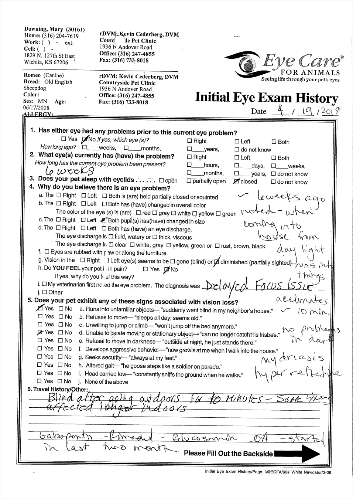
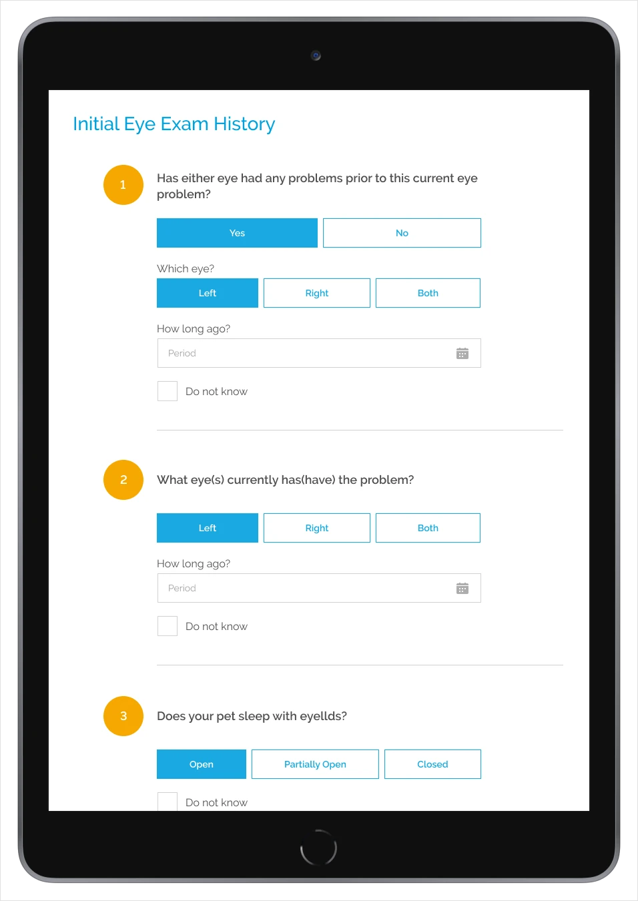
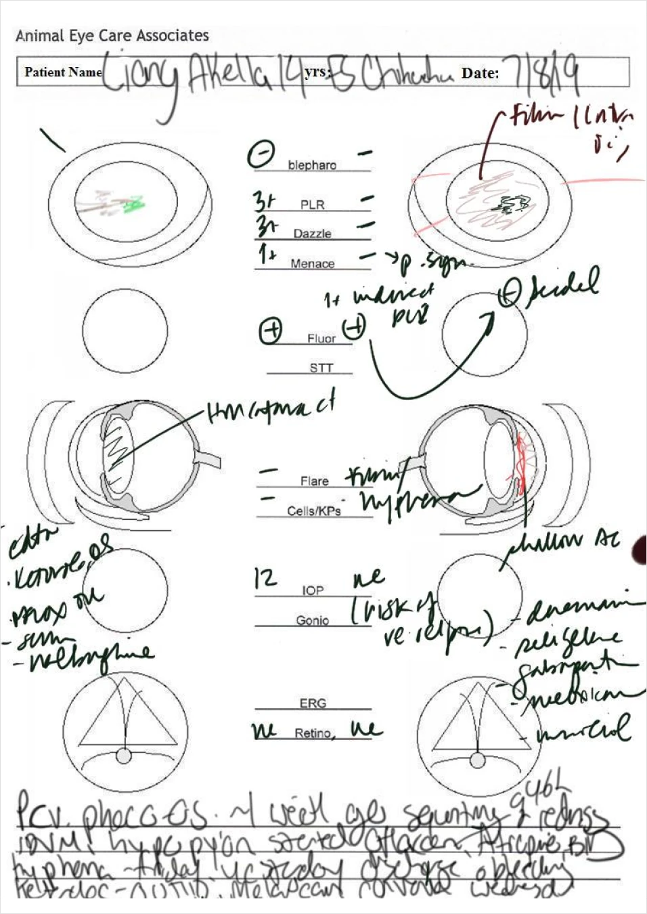
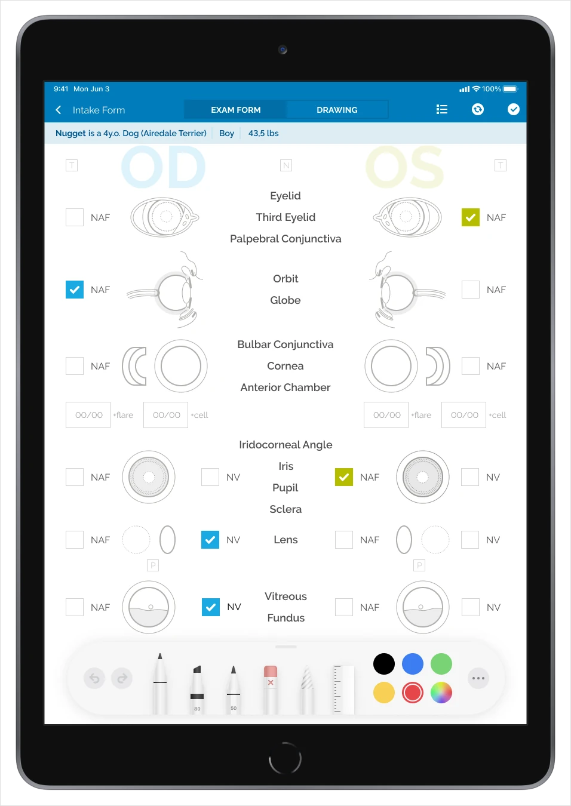
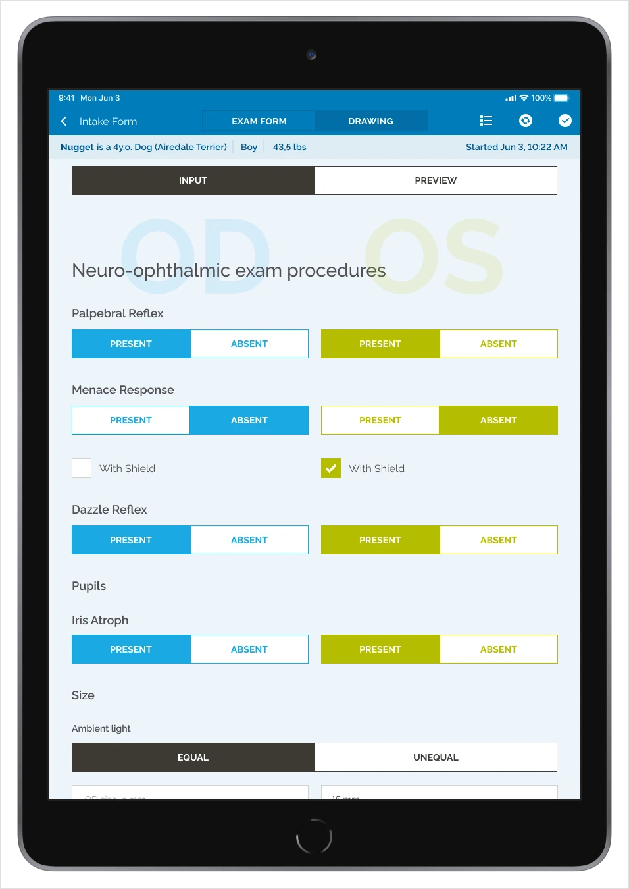
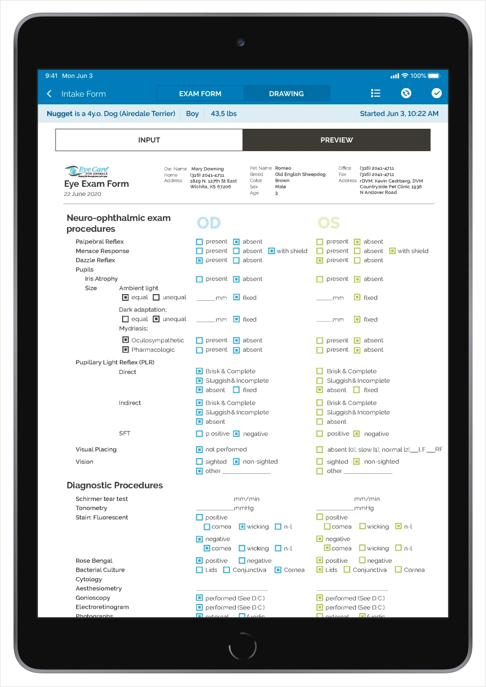
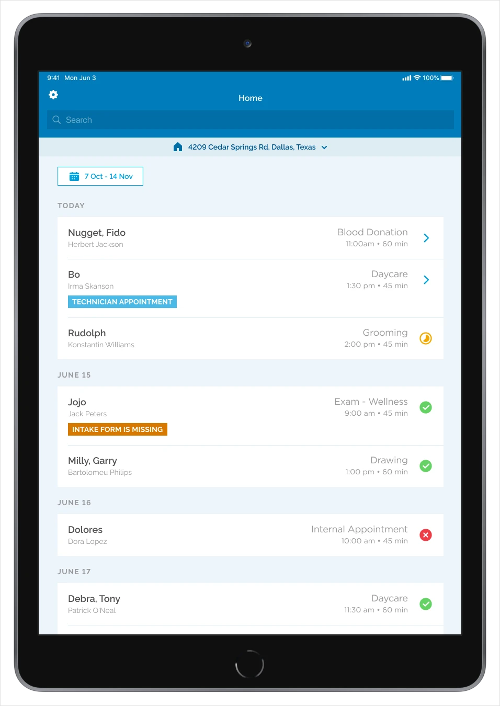
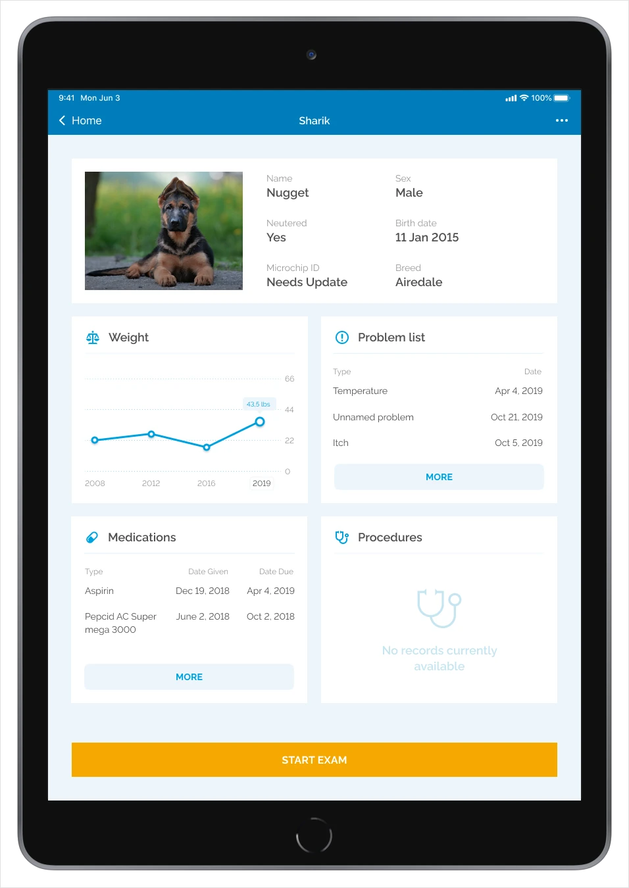
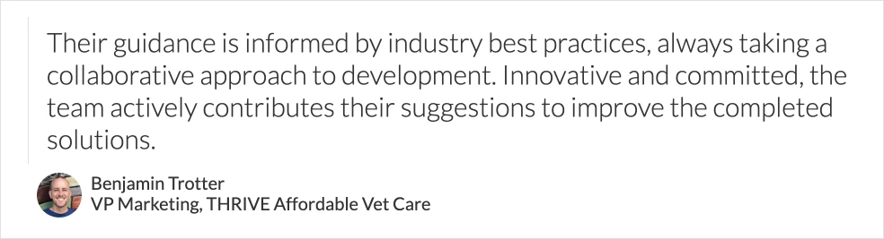

Wink Eye Care · B2B · iPadOS
Tablet App for Veterinary Ophthalmologists
Turning a paper-heavy examination routine into a focused digital workflow for veterinary ophthalmologists.
Overview
Wink Eye Care is a private iPad app that brings together tools for veterinary ophthalmologists. It simplifies pet examinations and helps doctors move from a paper process to a digital workflow.
I was the only designer in a small team with a project manager, developers, and QA. My work covered user scenarios, interactive prototyping, interface design, a component and style ecosystem, medical-document adaptation, interactive PDF forms, testing, and design review.
Problem
Doctors were doing the same work twice: completing paper forms during an examination and then transferring the information to a computer. The goal was to digitize this routine without making the transition unfamiliar or disruptive.
The product needed to eliminate duplicate paperwork, optimize eye examinations, and keep familiar medical forms available during the transition.
Process
After grouping requirements and splitting the work into iterations, I started with an interactive prototype. Doctors tested the examination flow before visual details were fixed, and their feedback informed the next iteration.
I adapted paper forms for tablet use, defined comfortable component dimensions for iPadOS and stylus interaction, and converted medical forms into interactive documents synchronized with the new interface.








Outcome
The first version combined an examination flow, visit schedule, and individual pet records for weight, age, vaccinations, and prescriptions. The team’s veterinary experience helped us move faster than the original schedule.
The project deepened my understanding of iPadOS, stylus interaction, interactive PDF forms, and the translation of specialist paper workflows into software.
